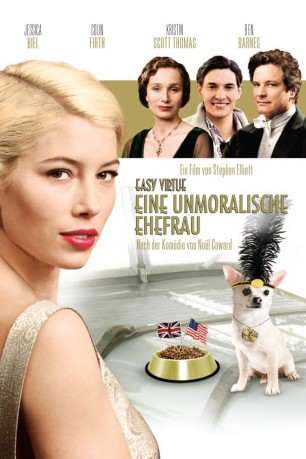

#2274 Easy Virtue - Eine unmoralische Ehefrau
Alternativ: Easy Virtue
 
 IMDB-Wertung: 6.7 / 10
IMDB-Wertung: 6.7 / 10  Metascore: 58
Metascore: 58 
Als der junge englische Aristokrat John Whittaker (Ben Barnes) seine frisch angetraute Braut, die amerikanische Rennfahrerin Larita (Jessica Biel), ins elterliche Schloss bringt, sind die Reaktionen gemischt: Während Johns elegant verschlampter Vater (Colin Firth) aus seinem Dämmerzustand erwacht und amüsiert einen Hauch von Interesse für den Familienneuzugang aufbringt, ist Mrs Whittaker (Kristin Scott-Thomas) schlichtweg entsetzt – eine Amerikanerin, wie vulgär!
Jahr: 2008
Dauer: 97 Minuten
FSK: 6
Land: England Studio: Sony Pictures ReleasingTonspuren:
Untertitel: Deutsch,
Auflösung: 1080p (1920x816) Größe: 4075 MB
Genre: Komödie, Liebe
Regisseur: Stephan Elliott
Drehbuch: Stephan Elliott, Sheridan Jobbins, Noël Coward
Soundtrack: Marius De Vries
Darsteller:
 Jessica Biel als Larita Whittaker
Jessica Biel als Larita Whittaker Ben Barnes als John Whittaker
Ben Barnes als John Whittaker Kristin Scott Thomas als Veronica Whittaker
Kristin Scott Thomas als Veronica Whittaker Colin Firth als Mr. Whittaker
Colin Firth als Mr. Whittaker- Kimberley Nixon als Hilda Whittaker
 Katherine Parkinson als Marion Whittaker
Katherine Parkinson als Marion Whittaker- Kris Marshall als Furber
 Christian Brassington als Phillip Hurst
Christian Brassington als Phillip Hurst Charlotte Riley als Sarah Hurst
Charlotte Riley als Sarah Hurst Pip Torrens als Lord Hurst
Pip Torrens als Lord Hurst- Mike Archer als Warwick Holborough
- Rebel Penfold-Russell als Mrs. Winston
- Stewart Clarke als Young Man #1
- Jim McManus als Jackson
- Jeremy Hooton als Davis
- Joanna Bacon als Cook / Doris / Beatrice
- Maggie Hickey als Millie the Maid
 Georgie Glen als Mrs. Landrigin
Georgie Glen als Mrs. Landrigin- David Longstaff als Reverend Burton
- Oliver Reid als Young Man #2
- Joe Reid als Young Man #3
- Stephan Elliott als Grumpy Party Guest
- Sheridan Jobbins als Grumpy Party Guest
- Fizz als Poppy
- Laurence Richardson als Marcus , uncredited
Datei: X:\2008(A-F)\Easy Virtue - Eine unmoralische Ehefrau (2008, FSK6, 1920x816).mkv seit 26.10.2015
Festplatte: HD 2007(A-Z)-2008(A-F)
 Es gibt insgesamt 66 Filme in der Gruppe '2008(A-F)'
Es gibt insgesamt 66 Filme in der Gruppe '2008(A-F)'